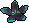
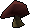
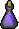
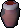
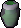
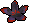

Chambers of Xeric Potion Guide
Combat Potions
Elder Potion
Boosts melee combat levels
Ingredients Needed:


Kodai Potion
Boosts magic level
Ingredients Needed:

Twisted Potion
Boosts range level
Ingredients Needed:
Overload Potion
Boosts all combat levels
Ingredients Needed:


Other Potions
Revitalisation Potion
Restores drained stats and prayer points
Ingredients Needed:

Xeric's aid
Drains combat stats. Restores HP and Defence.
Ingredients Needed:
Prayer Enhance
Gradually restores prayer points over time
Ingredients Needed: